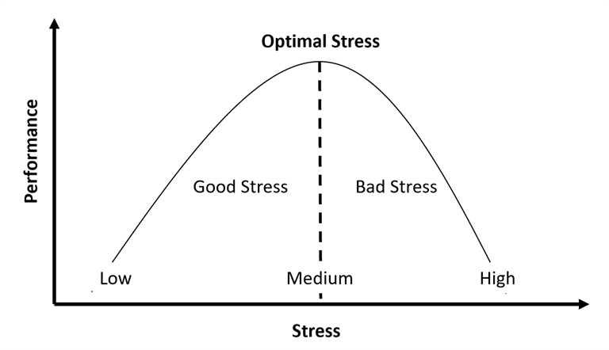

The Edge of Choice
Most decision-making frameworks treat choices as isolated events — a cost-benefit calculation made at a single point in time. Choice Potential Theory takes a different approach. It argues that every meaningful decision occurs at the boundary of what a person can tolerate, and that this boundary — called the "degree" (度) — is not fixed. It shifts, expands, and contracts based on experience, shaping the landscape of all future choices.
The Approximation Zone
The core insight is simple: growth happens when you approach the edge of your capacity without crossing it. This zone of approach — what the theory calls the "approximation zone" (逼近区) — maps closely onto the psychological concept of flow and the optimal stress range described by the Yerkes-Dodson curve. Push too far past the edge, and you enter a danger zone where damage accumulates silently, often collapsing under a seemingly trivial trigger — a phenomenon the theory explains through critical slowing down, borrowed from dynamic systems theory.
